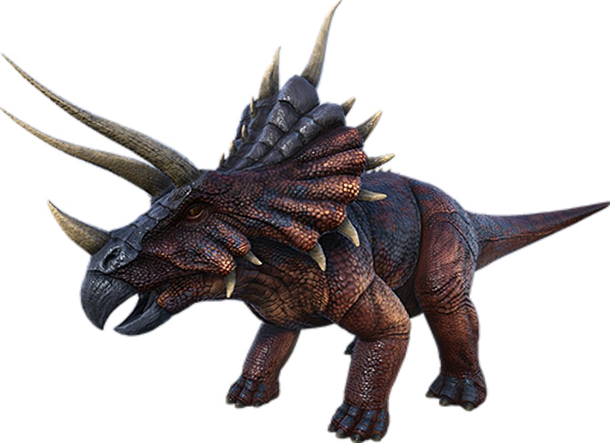

Apparently a crossbreed of a Triceratops and Styracosaurus, Triceratops styrax has both the characteristic three-horned face of Triceratops and the prominent horned-ridge of Styracosaurus. Normally a very docile grazing animal, Triceratops becomes aggressive once angered. Triceratops will chase down would-be predators (and egg-stealers) with incredible prejudice. Running away from triceratops is harder than it seems due to its ability to charge and ram its target. I've seen Triceratops have an especially hostile reaction to the Tyrannosaurus, with herds attacking en masse. While not very fast, they are deadly in a group.